Photos, graphics, video & websites that people notice.
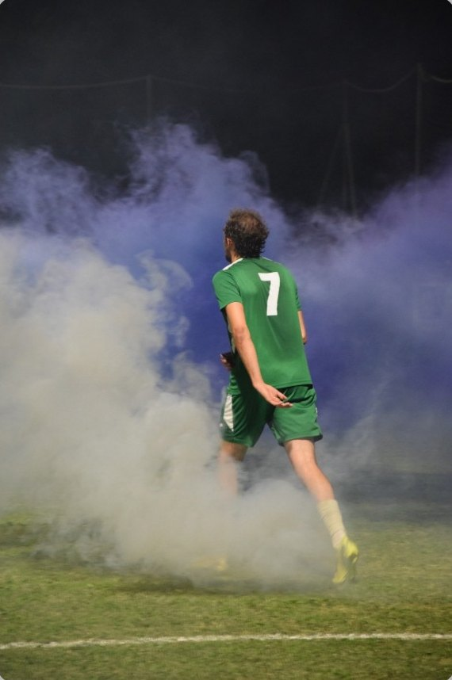
Lorenzo Devicienti — digital marketer and multidisciplinary creative. Social Media Manager at AtleticProgettoMontagna, founder of Dsgn.pop.
- 01 Photography
- 02 Graphic design
- 03 Video editing
- 04 Web design
Motto
“To get something you don’t have, you have to do something you’ve never done before.” — Mirko Martorana
Selected work
01PhotographyAtleticProgettoMontagna · Felina F.C. · Portraits50 photos 02Graphic designAPM match posters · Dsgn.pop10 posts 03Video editingMarcus Thuram — short-form editTikTok-first 04Web designAGLF · Castelnovo ne’ Monti · Casina · Villa Minozzo4 sites
01 — Photography
Photography
Second season as Social Media Manager for AtleticProgettoMontagna, shooting their matches. A summer tournament with Felina F.C. And portraits of the people around me — something I really enjoy.


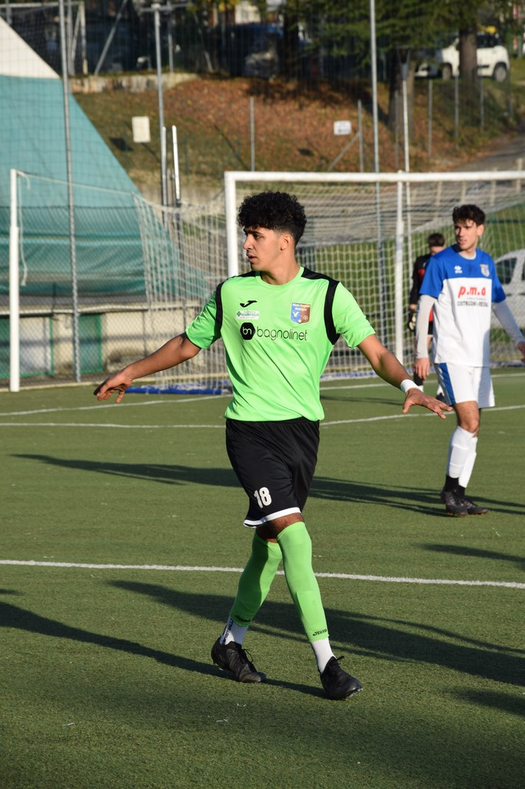


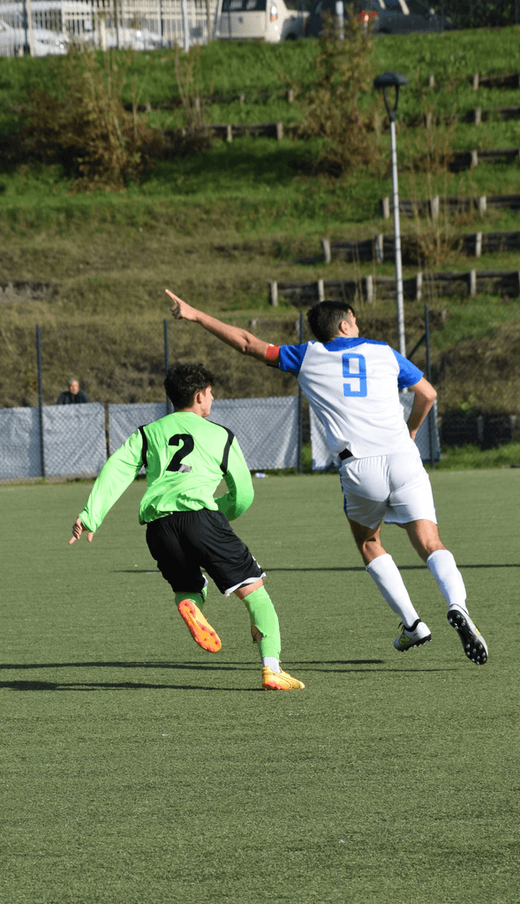
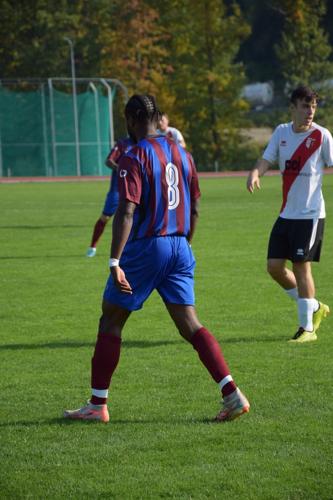


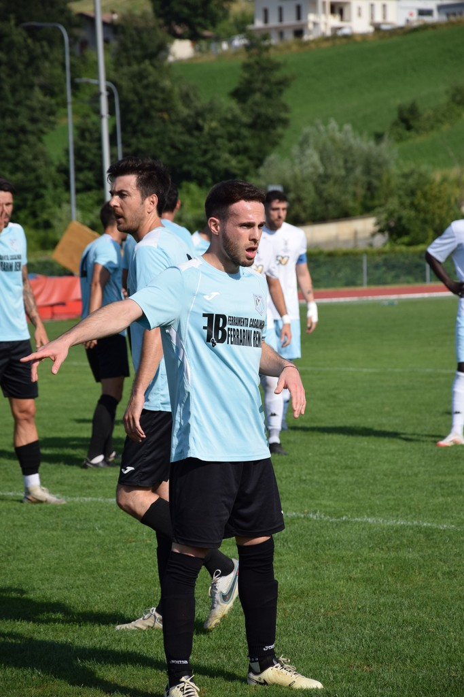

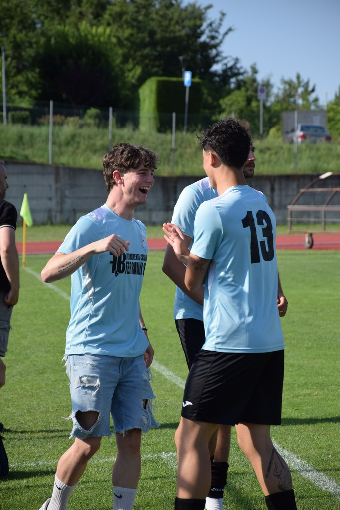


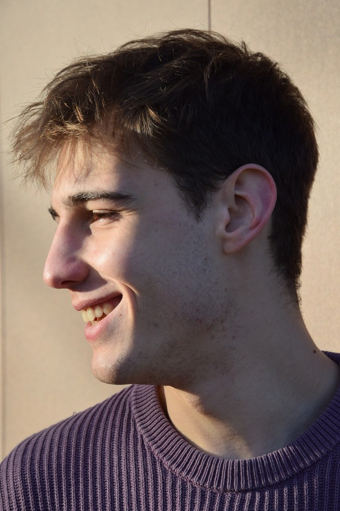

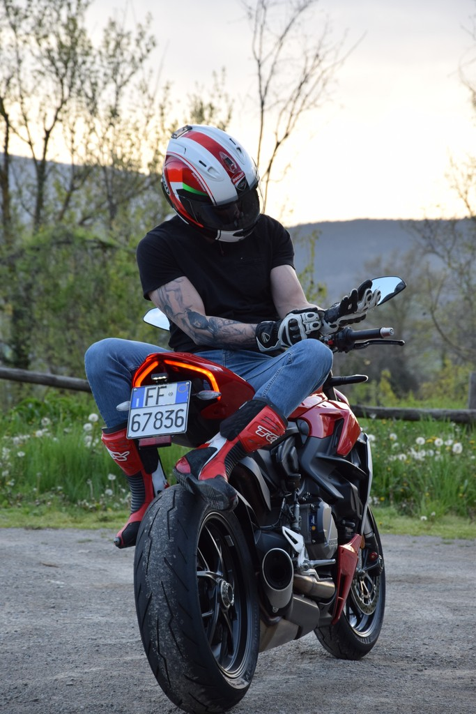


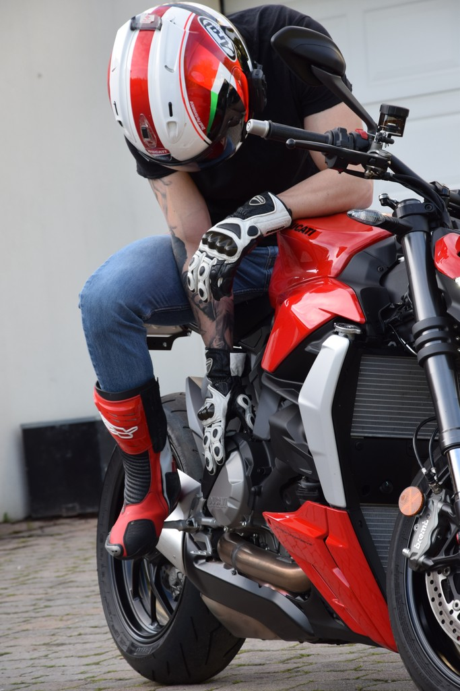
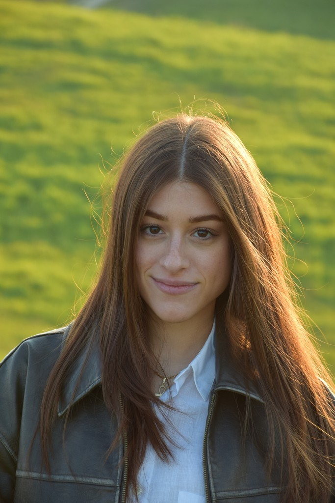


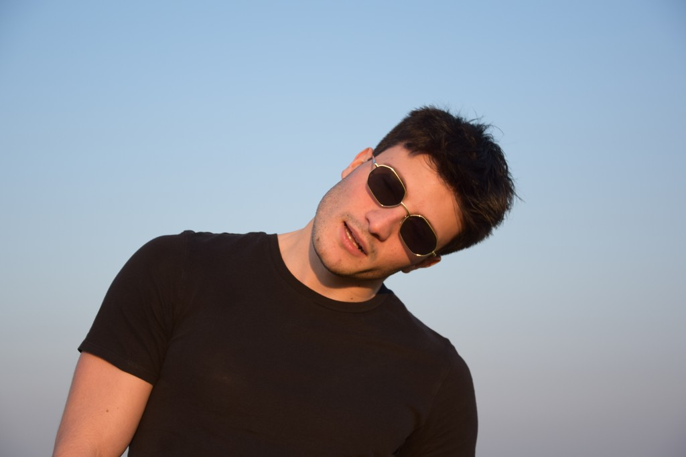
02 — Graphic design
Graphic design
Graphics have always fascinated me. Match-day posters for the APM sports club, and editorial posts for Dsgn.pop, my design page on Instagram.
Scroll →
Posters, carousels and editorial posts — published every day on Dsgn.pop.
Follow @dsgn.pop

01/ 10

02/ 10

03/ 10

04/ 10
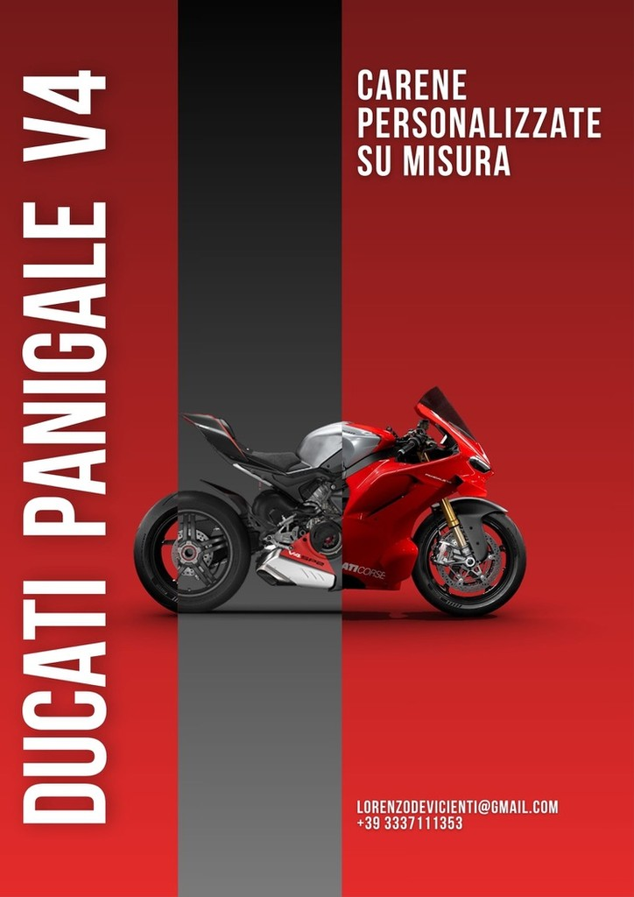
05/ 10

06/ 10
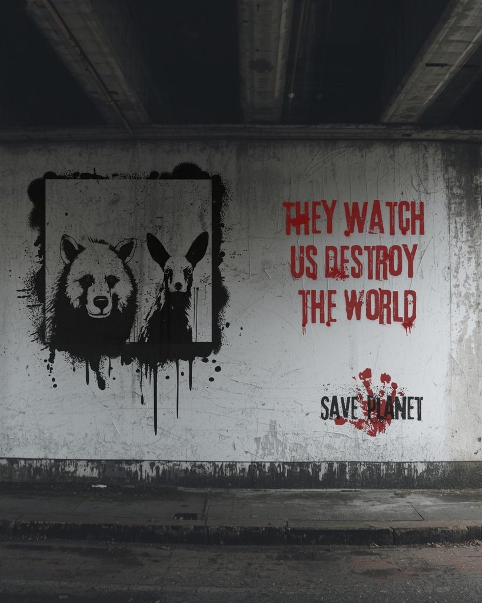
07/ 10
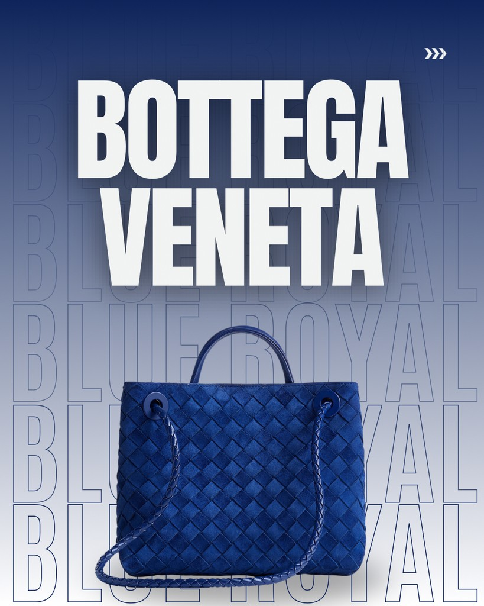
08/ 10

09/ 10

10/ 10
03 — Video editing
Built on rhythm
Crafted for visual impact. Short-form edits where fast cuts, beat-driven transitions and pacing turn performance into emotion.
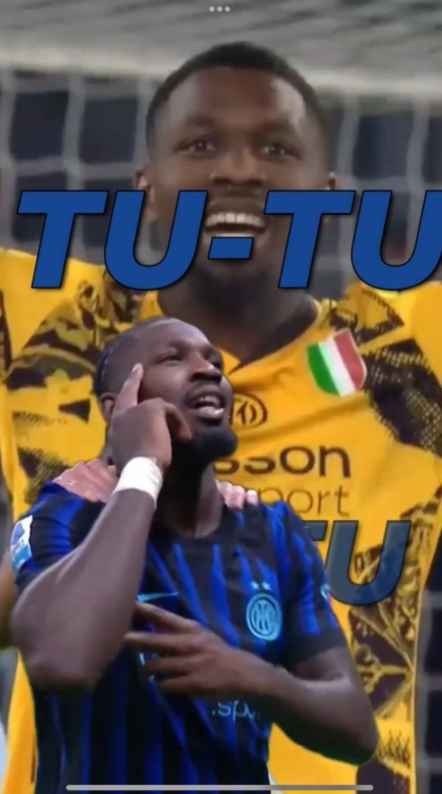
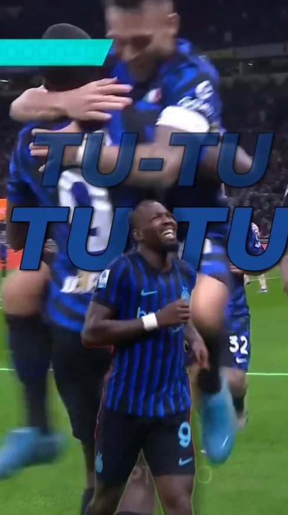
A short-form edit dedicated to Marcus Thuram: athletic movement, presence and character, translated into a visually engaging story built for social platforms. Where motion meets identity.
04 — Web design
Websites
Two internships at Officina48: WordPress and Elementor for local brands, then a central role on municipal and institutional websites — clarity, usability and reliability for public communication.


05 — About
The story

At 18 I didn’t know what to do with my life. I only knew technology had always been part of it — and probably always will be.
- University
Unimore — Digital Marketing
Department of Communication and Economics, Reggio Emilia. Three years of video editing, programmatic, graphic design, web development and ad strategy. I learned what I like — and, more importantly, what I don’t.
- Internships
Officina48 S.n.C.
A real creative workflow: content, visual design and WordPress layouts for local businesses, then municipal websites across the territory.
- Now
Social Media Manager — APM
Second season with AtleticProgettoMontagna: match photography, graphics and social content.
- Side project
Dsgn.pop
My Instagram page about design, where I keep practising in public.
- Approach
AI as a helper
I use AI to simplify and speed up the work — never to replace the idea.
06 — Services
How I can help
01
Shooting
- Photo shoots
- Post-production
- Publishing advice
02
Design
- Posters
- Interfaces
- Presentations
- Carousels
03
Video editing
- Video production
- Post-production
- Publishing advice
04
Websites
- UX/UI design
- Figma & Framer
- WordPress
07 — Contact
Have an idea worth building? Let’s turn it into something people notice. Open to collaborations, freelance projects and bold concepts where design and strategy collide.
Click to copy · or open your mail app
Barcelona